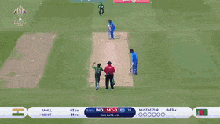
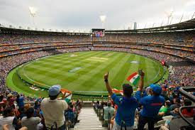

Baseball is primarily played in the United States. The sport has approximately 45.3 million fans. The sport is diminishing in views as time runs. Many people perceive the sport eminently boring. Consequently, this may have to do with the significant drop of fans annually for the sport. Baseball is pretty limited to in the sport itself. There isn't mich contentment. Only few feel the jubilancy.

Cricket is a very popular sport in South Asia, Europe, and Oceania. Cricket in the other hand is incrementing in views.In fact, cricket is the 2nd most views sport in the world. The sport has 2.5 billion fans. Most of these fans are from India and Pakistan. India and Pakistan are one of the most populous contries in the world. India with 1.3 billion people and Pakistan with practically 230 million people. Apparently, the most viewed cricket games are typically India v.s. Pakistan. Stadiums are packed with people. When a wicket or spectacular event transpires, people go crazy with the celebration and bestowing of motivation towards their favorite team.
 